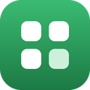
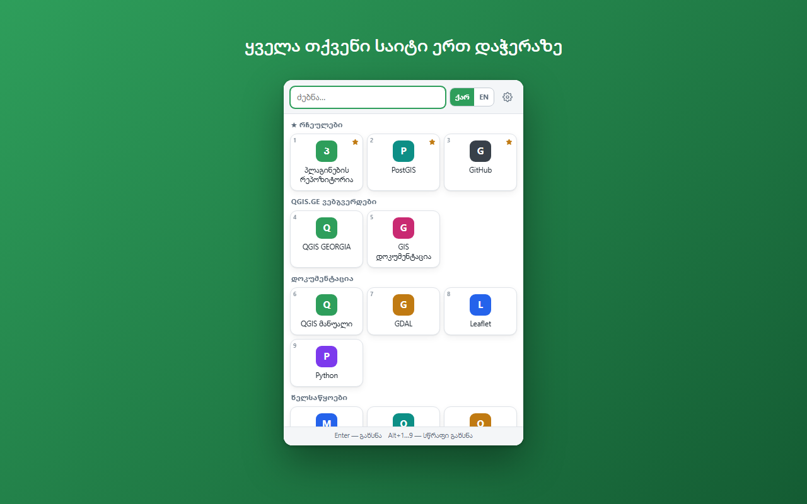
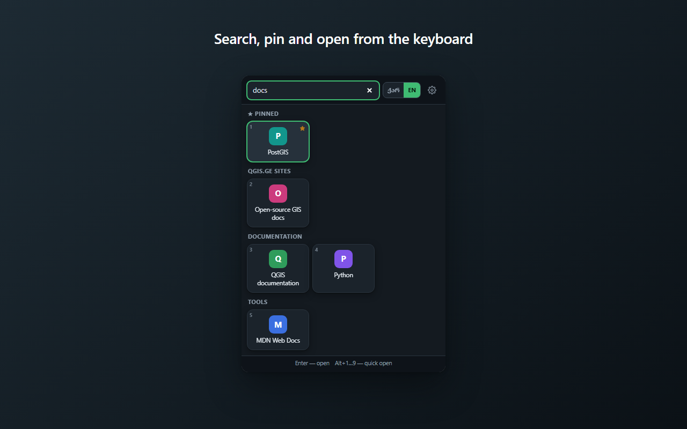
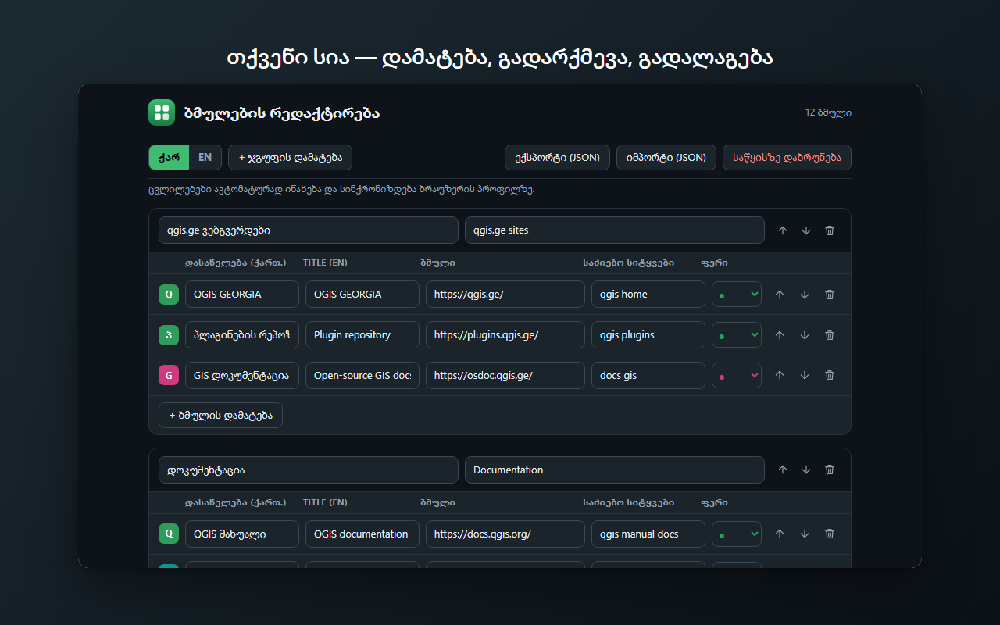

ერთი დაჭერით გახსენით საიტები და რეპოზიტორიები, რომლებსაც ყოველდღე იყენებთ. სია სრულად თქვენია. Open the sites and repositories you use every day in one click. The list is entirely yours.
აირჩიეთ თქვენი ბრაუზერი. Pick your browser.
მაღაზიიდან — ავტომატური განახლებით. ამჟამად განხილვის პროცესშია; ბმული აქ გამოჩნდება, როგორც კი გამოქვეყნდება. From the store, with automatic updates. Currently in review; the link will appear here once it is published.
მანამდე Edge-ზეც მუშაობს ქვემოთ აღწერილი ხელით დაყენება — Edge-ზე მისამართია edge://extensions.
Until then the manual route below works in Edge too — its address is edge://extensions.
ხელით დაყენება. სამი წუთი სჭირდება და ყველა Chromium ბრაუზერში ერთნაირად მუშაობს. Manual install. It takes three minutes and works the same in every Chromium browser.
chrome://extensions (Edge-ზე edge://extensions, Brave-ზე brave://extensions).
Open chrome://extensions (edge://extensions in Edge, brave://extensions in Brave).
manifest.json დევს.
Click Load unpacked and pick the unzipped folder — the one that contains manifest.json.
თუ Chrome ან Edge ცენტრალიზებულად იმართება — უნივერსიტეტში, კომპანიაში, საკლასო ოთახში — გაფართოება შეიძლება ავტომატურად დაყენდეს და განახლდეს ჯგუფური პოლიტიკით, მაღაზიის გარეშე. If Chrome or Edge is centrally managed — a university, a company, a classroom — the extension can be installed and kept up to date by policy, with no store involved.
ქვემოთ ნაჩვენები ბმულები მაგალითია — თქვენი სია სრულად თქვენ განსაზღვრავთ. The links below are an example — your own list is entirely up to you.



გაფართოება არცერთ სერვერს არ უკავშირდება და ითხოვს ერთადერთ ნებართვას — storage — რომ თქვენივე ბმულების სია დაიმახსოვროს. არც ისტორიაზე, არც ჩანართების შიგთავსზე წვდომა არ აქვს; საიტების ხატულებსაც კი არ ჩამოტვირთავს.
The extension contacts no server and asks for a single permission — storage — to remember your own list of links. It has no access to your history or the content of your tabs, and does not even download site favicons.